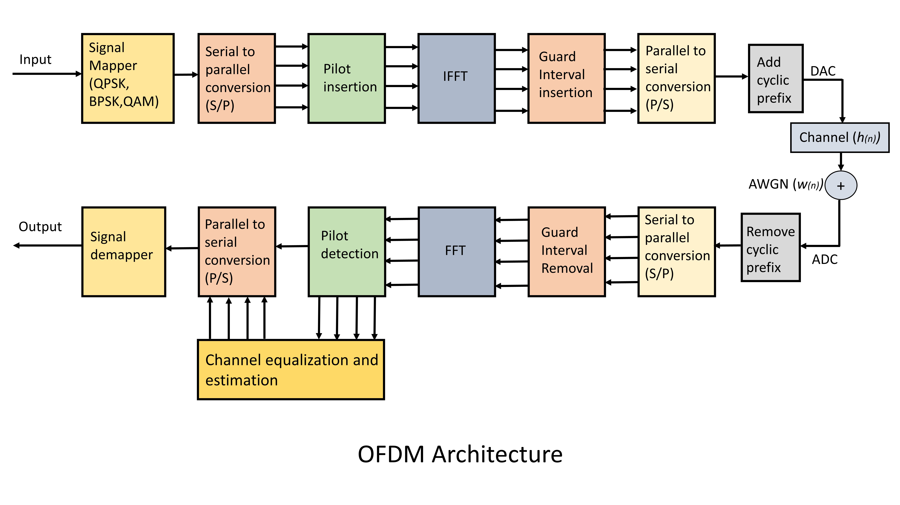

Wireless Communication
Orthogonal Frequency Division Multiplexing (OFDM) is a modulation technique that is used for many of the latest wireless communcation standards. OFDM is becoming widely applied communications systems due to its high rate transmission capability with high bandwidth efficiency and its robustness with regards to multipath fading and delay. The basic idea underlying OFDM systems is the division of the available frequency spectrum or channel into several subcarriers. To obtain the high efficiency, the frequency of the subcarriers are overlapping and orthogonal.
There are two main problems in designing channel estiamtors for wireless OFDM systems. The first problem is the arrangement of pilot information, where pilot means the reference signal used by both transmitter and receivers. The second problem is the designing of an estimator with low complexity and good channel tracking ability.


OFDM technique is used in several applications :
- Wi-Fi : Standards like 802.11a, 802.11n, 802.11ac and more
- WiMAX
- LTE
- 5G and Beyond
- Underwater communications
- Optical light modulation
- Digital audio radio